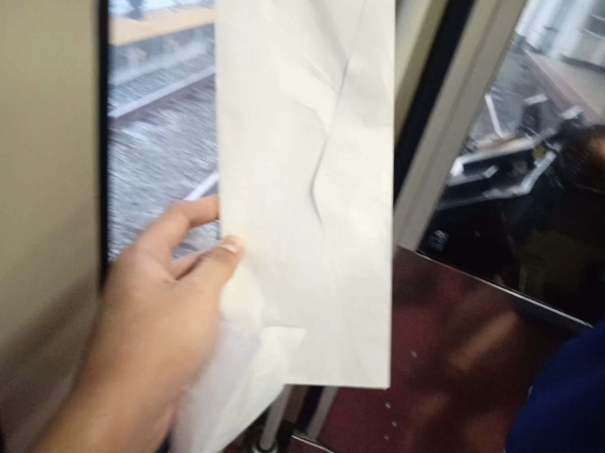

Justin sent a letter to LRT-1 management
Justin sent a letter to Light Rail Manila Corporation for serving passengers as great service of LRT-1.
Creation of letter
Before the letter was created, he always ride LRT-1 and he realized that the LRT-1 give him a better service because of fast train speed, cold air conditioning system, enjoyable view outside and also cheap fare.He wrote the letter on February 12, 2023 for preparation and his plan to ride LRT-1 from Libertad to Baclaran on next day.
Rode the LRT-1 and leave the letter
In February 13, 2023, it's time to work his plan to leave the letter at the back of train at the last train car. He rode the LRT-1 train from Libertad and he was holding the letter while he taking a video for his ride.Instead of EDSA station as his destination, he decided to go Baclaran station because to leave the letter in the train without knowing people inside the train. He already know that EDSA and Baclaran segment are so short, he can able to walk to go back.
Before approaching the train where Justin is onborading, unfortunately, the train switched the track to northbound side causing the passengers in northbound side are onborading the train immediately and possibility to see the letter.
Leaving the letter
The train arrives at Baclaran station and ghe doors are opened, he leave the letter carefully as long as the train driver able to notice the letter. After the letter was placed, he go out from the train.
Social media viral

Hours after the letter was placed, the female driver found the letter written by Justin as she is at Fernando Poe Jr. station of evening and she post it on Facebook. It rapidly go viral until the creation of letter see the post.
Many people such the rail enthusiast had seen the post of a train driver and some people shared the post that shows a good message as a commuter.
Reaching to LRMC
The letter was received by Light Rail Manila Corporation (LRMC) on February 13, 2023 which the rail operator are so happy about the letter because it was a first time receiving this in the LRT-1 history.In March 21, 2023, the Light Rail Manila Corporation sent a message through Facebook Messenger to Justin who wrote a letter that they already received the letter. LRMC told Justin to give some contact information to meet one of the team of LRMC.
Justin meets one of LRMC team
LRMC is ready to meet Justin at EDSA station at March 24, 2023 at 7:20 PM (since Justin gave the information what place and time). Justin was able to said it's secret how the letter was made and the team of LRMC said that the letter was received on February 13, 2023 by train driver. It was a one day before the Valentine's day.And the team said to him that it already know that he always doing trainspotting and it already listened the songs. So they ask him to sing the song about LRT-1 and Justin able to sing from start to finish. The song he was sing was
Light Rail Transit Line 1.
After the meet ends, LRMC provided merchandises for Justin as his having good work for LRT-1.
Merchandises received
After the meet with one of the team of LRMC, he shows the content of the bag given by LRMC, the contents are:- White shirt with LRT-1 trains of 1st, 2nd, 3rd, and 4th gens
- LRT1 ikot MNL name tag
- LRT1 ikot MNL reusable bag
- 4th gen train USB drive with 31.4 GB capacity
- Letter from LRMC
View images of merchandises from LRMC
This is a good example of good message from the passenger of LRT-1.
You want to view the letter? Click here
You want to view the letter? Click here